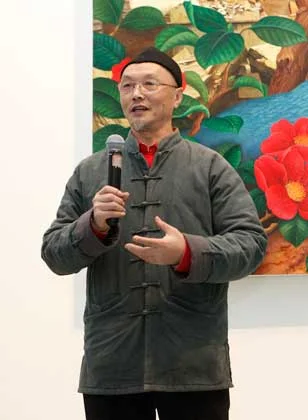

人物简介
吕胜中是中央美术学院教授，也是一位持续用剪纸语言说话的当代艺术家。他没有复制传统纹样，而是把剪纸里的"对称""镂空""正负形"抽离出来，放进装置、影像和行为艺术里。
他广为人知的“小红人”系列，使民间图像不再停留在装饰层面，而被赋予更强的社会文化含义，从而推动了剪纸语言在当代语境中的再生。
中央美术学院教授、当代艺术家。他把民间剪纸语言引入当代艺术叙事，使传统视觉符号进入新的展览与研究语境。

吕胜中是中央美术学院教授，也是一位持续用剪纸语言说话的当代艺术家。他没有复制传统纹样，而是把剪纸里的"对称""镂空""正负形"抽离出来，放进装置、影像和行为艺术里。
他广为人知的“小红人”系列，使民间图像不再停留在装饰层面，而被赋予更强的社会文化含义，从而推动了剪纸语言在当代语境中的再生。
吕胜中的创作核心不是"剪得好不好"，而是"这些图案在说什么"。他把民间信仰里的生命符号、婚丧嫁娶里的仪式图像，转换成当代人可以理解的视觉寓言。
在他之前，剪纸在美术馆里最多作为"民间美术"的一个板块出现；在他之后，它成为了当代艺术的正式成员。他证明了传统语言不必被保护在玻璃柜里——它可以活蹦乱跳地进入今天。